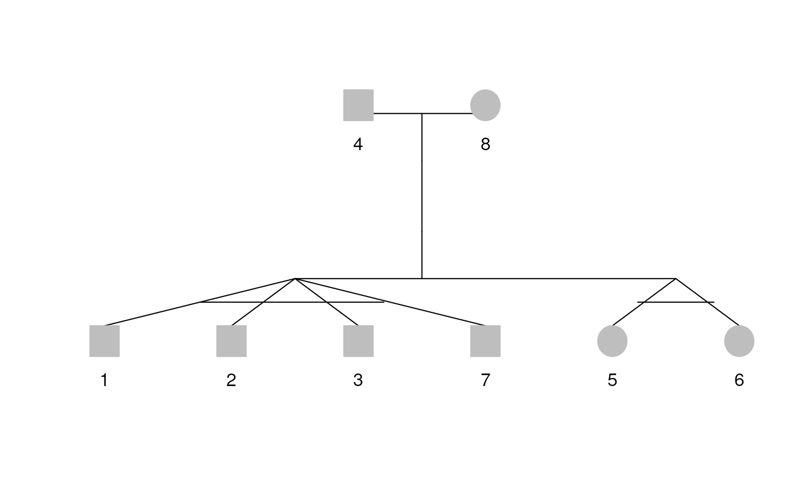

Pedigree kinship() details
TM Therneau
25 February, 2025
Source:vignettes/pedigree_kinship.Rmd
pedigree_kinship.RmdIntroduction
The kinship matrix is foundational for random effects models with family data. For \(n\) subjects it is an \(n \times n\) matrix whose \(i\), \(j\) elements contains the expected fraction of alleles that would be identical by descent if we sampled one from subject \(i\) and another from subject \(j\). Note that the diagonal elements of the matrix will be 0.5 not 1: when we randomly sample twice from the same subject (with replacement) we will get two copies of the gene inherited from the father 1/4 of the time, the maternal copy twice (1/4) or one of each 1/2 the time. The formal definition is \(K(i,i) = 1/4 + 1/4 + 1/2 K(m,f)\) where \(m\) and \(f\) are the father and mother of subject \(i\).
The algorithm used is found in K Lange, Mathematical and Statistical Methods for Genetic Analysis, Springer 1997, page 71–72.
The key idea of the recursive algorithm for \(K(i,j)\) is to condition on the gene selection for the first index \(i\). Let \(m(i)\) and \(f(i)\) be the indices of the mother and father of subject \(i\) and \(g\) be the allele randomly sampled from subject \(i\), which may of either maternal or paternal origin.
\[ \begin{align} K(i,j) &= P(\mbox{$g$ maternal}) * K(m(i), j) + P(\mbox{$g$ paternal}) * K(f(i), j) \\ &= \frac{1}{2} K(m(i), j) + \frac{1}{2} K(f(i), j) \\ K(i,i) &= \frac{1}{2}(1 + K(m(i), f(i))) \end{align} \]
The key step in equation \(K(i,j)\) is if \(g\) has a maternal origin, then it is a random selection from the two maternal genes, and its IBD state with respect to subject \(j\) is that of a random selection from \(m(i)\) to a random selection from \(j\). This is precisely the definition of \(K(m(i), j)\). The recursion does not work for \(K(i,i)\) since once we select a maternal gene the second choice from \(j\) cannot use a different maternal gene.
For the recurrence algorithm to work properly we need to compute the values of \(K\) for any parent before the calculations for their children. Pedigree founders (those with no parents) are assumed to be unassociated, so for these subjects we have
\[ \begin{align*} K(i,i) &= 1/2 \\ K(i,j) &= 0 \ ; i\ne j \end{align*} \]
The final formula slightly different for the \(X\) chromosome. Equation \(K(i,j)\) still holds, but for males the probability that a selected \(X\) chromosome is maternal is 1, so when \(i\) a male the recurrence formula becomes \(K(i,j) = K(m(i),j)\). For females it is unchanged. All males will have \(K(i,i) = 1\) for the \(X\) chromosome.
In order to have already-defined terms on the right hand side of the recurrence formula for each element, subjects need to be processed in the following order
- Generation 0 (founders)
- \(K(i,j)\) where \(i\) is from generation 1 and \(j\) from generation 0.
- \(K(i,j)\) with \(i\) and \(j\) from generation 1
- \(K(i,j)\) with \(i\) from generation 2 and \(j\) from generation 0 or 1
- \(K(i,j)\) with \(i\) and \(j\) from generation 2.
- …
The kindepth routine assigns a plotting depth to each subject in such a way that parents are always above children. For each depth we need to do the compuations of formula \(K(i,j)\) twice. The first time it will get the relationship between each subject and prior generations correct, the second will correctly compute the values between subjects on the same level. The computations within any stage of the above list can be vectorized, but not those between stages.
Let \(indx\) be the index of the rows for the generation currently being processed, say generation \(g\). We add correct computations to the matrix one row at a time; all of the calculations depend only on the prior rows with the exception of the \(i,i\) element. This approach leads to a for loop containing operations on single rows/columns.
At one point below we use a vectorized version. It looks like the snippet below
for (g in 1:max(depth)) {
indx <- which(depth == g)
kmat[indx, ] <- (kmat[mother[indx], ] + kmat[father[indx], ]) / 2
kmat[, indx] <- (kmat[, mother[indx]] + kmat[, father[indx], ]) / 2
for (j in indx) kmat[j, j] <- (1 + kmat[mother[j], father[j]]) / 2
}The first line computes all the values for a horizontal stripe of the matrix. It will be correct for columns in generations \(<g\), unreliable for generation \(g\) with itself because of incomplete parental relationships, and zero for higher generations. The second line does the vertical stripe, and because of the line before it does have the data it needs and so gets all the stripe correct. Except of course for the diagonal elements, for which formula \(K(i,j)\) does not hold. We fill those in last. We know that vectorized calculations are always faster in R and I was excited to figure this out. The unfortunate truth is that for this code it hardly makes a difference, and for the X chromosome calculation leads to impenetrable if-then-else logic.
The program can be called with a Pedigree, or raw data. The first argument is \(id\) instead of the more generic \(x\) for backwards compatability with an older version of the routine. We give founders a fake parent of subject \(n+1\) who is not related to anybody (even themself); it avoids some if-then-else constructions.
With a Pedigree object
The method for a Pedigree object is an almost trivial modification. Since the mother and father are already indexed into the id list it has two lines that are different, those that create mrow and drow. The other change is that now we potentially have information available on monozygotic twins. If there are any such, then when the second twin of a pair is added to the matrix, we need to ensure that the pairs kinship coefficient is set to the self-self value. This can be done after each level is complete, but before children for that level are computed. If there are monozygotic triples, quadruplets, etc. this computation gets more involved.
The total number of monozygotic twins is always small, so it is
efficient to fix up all the monzygotic twins at each generation. A
variable \(havemz\) is set to
TRUE if there are any, and an index array \(mzindex\) is created for matrix
subscripting.
With multiple families
For the Minnesota Family Cancer Study there are 461 families and
29114 subjects. The raw kinship matrix would be 29114 by 29114 which is
over 5 terabytes of memory, something that clearly will not work within
S. The solution is to store the overall matrix as a sparse Matrix
object. Each family forms a single block. For this study we have
n <- table(minnbreast$famid); sum(n*(n+1)/2) or 1.07
million entries; assuming that only the lower half of each matrix is
stored. The actual size is actually smaller than this, since each family
matrix will have zeros in it — founders for instance are not related —
and those zeros are also not stored.
The result of each per-family call to kinship will be a symmetric matrix. We first turn each of these into a dsCMatrix object, a sparse symmetric form. The \(bdiag\) function is then used to paste all of these individual sparse matrices into a single large matrix.
Why do we note use (i in famlist) below? A numeric
subscript of [[9]] % selects the ninth family, not the
family labeled as 9, so a numeric family id would not act as we wished.
If all of the subject ids are unique, across all families, the final
matrix is labeled with the subject id, otherwise it is labeled with
family/subject.
library(Pedixplorer)
data(sampleped)
pedi <- Pedigree(sampleped[, -16]) # Remove adoption field
kinship(pedi)[35:48, 35:48]## 14 x 14 sparse Matrix of class "dsCMatrix"## [[ suppressing 14 column names '1_135', '1_136', '1_137' ... ]]##
## 1_135 0.500 . . 0.25 0.125 0.125 0.125 . . . . . . .
## 1_136 . 0.500 . 0.25 0.125 0.125 0.125 . . . . . . .
## 1_137 . . 0.50 . 0.250 0.250 0.250 . . . . . . .
## 1_138 0.250 0.250 . 0.50 0.250 0.250 0.250 . . . . . . .
## 1_139 0.125 0.125 0.25 0.25 0.500 0.250 0.250 . . . . . . .
## 1_140 0.125 0.125 0.25 0.25 0.250 0.500 0.250 . . . . . . .
## 1_141 0.125 0.125 0.25 0.25 0.250 0.250 0.500 . . . . . . .
## 2_201 . . . . . . . 0.50 . . 0.25 0.25 0.25 0.25
## 2_202 . . . . . . . . 0.50 . 0.25 0.25 0.25 0.25
## 2_203 . . . . . . . . . 0.5 . . . .
## 2_204 . . . . . . . 0.25 0.25 . 0.50 0.25 0.25 0.25
## 2_205 . . . . . . . 0.25 0.25 . 0.25 0.50 0.25 0.25
## 2_206 . . . . . . . 0.25 0.25 . 0.25 0.25 0.50 0.25
## 2_207 . . . . . . . 0.25 0.25 . 0.25 0.25 0.25 0.50MakeKinship
The older \(makekinship\) function,
from before the creation of PedigreeList objects, accepts the raw
identifier data, along with a special family code for unrelated
subjects, as produced by the make_famid() function. All the
unrelated subjects are put at the front of the kinship matrix in this
case rather than within the family. Because unrelateds get put into a
fake family, we cannot create a rational family/subject identifier; the
id must be unique across families.
We include a copy of the routine for backwards compatability, but do not anticipate any new usage of it. Like most routines, this starts out with a collection of error checks.
Monozygotic twins, for Pedigree object
Return now to the question of monzygotic sets, used specifically in the kinship for Pedigree objects. Consider the following rather difficult example:
| id1 | id2 |
|---|---|
| 1 | 2 |
| 2 | 3 |
| 5 | 6 |
| 3 | 7 |
| 10 | 9 |
Subjects 1, 2, 3, and 7 form a monozygotic quadruple, 5/6 and 9/10
are monzygotic pairs. First create a vector mzgrp which
contains for each subject the lowest index of a monozygotic twin for
that subject. For non-twins it can have any value. For this example that
vector is set to 1 for subjects 1, 2, 3, and 7, to 5 for 5 and 6, and to
9 for 9 and 10. Creating this requires a short while loop. Once this is
in hand we can identify the sets.
Next make a matrix that has a row for every possible pair. Finally, remove the rows that are identical. The result is a set of all pairs of observations in the matrix that correspond to monozygotic pairs.
df <- data.frame(
id = c(1, 2, 3, 4, 5, 6, 7, 8),
dadid = c(4, 4, 4, NA, 4, 4, 4, NA),
momid = c(8, 8, 8, NA, 8, 8, 8, NA),
sex = c(1, 1, 1, 1, 2, 2, 1, 2)
)
rel <- data.frame(
id1 = c(1, 3, 6, 7),
id2 = c(2, 2, 5, 3),
code = c(1, 1, 1, 1)
)
pedi <- Pedigree(df, rel)
plot(pedi)
## 6 x 6 sparse Matrix of class "dsCMatrix"
## 1 2 3 7 5 6
## 1 0.50 0.50 0.50 0.50 0.25 0.25
## 2 0.50 0.50 0.50 0.50 0.25 0.25
## 3 0.50 0.50 0.50 0.50 0.25 0.25
## 7 0.50 0.50 0.50 0.50 0.25 0.25
## 5 0.25 0.25 0.25 0.25 0.50 0.50
## 6 0.25 0.25 0.25 0.25 0.50 0.50Session information
## R version 4.4.2 (2024-10-31)
## Platform: x86_64-pc-linux-gnu
## Running under: Ubuntu 22.04.4 LTS
##
## Matrix products: default
## BLAS: /usr/lib/x86_64-linux-gnu/openblas-pthread/libblas.so.3
## LAPACK: /usr/lib/x86_64-linux-gnu/openblas-pthread/libopenblasp-r0.3.20.so; LAPACK version 3.10.0
##
## locale:
## [1] LC_CTYPE=en_US.UTF-8 LC_NUMERIC=C
## [3] LC_TIME=en_US.UTF-8 LC_COLLATE=en_US.UTF-8
## [5] LC_MONETARY=en_US.UTF-8 LC_MESSAGES=en_US.UTF-8
## [7] LC_PAPER=en_US.UTF-8 LC_NAME=C
## [9] LC_ADDRESS=C LC_TELEPHONE=C
## [11] LC_MEASUREMENT=en_US.UTF-8 LC_IDENTIFICATION=C
##
## time zone: UTC
## tzcode source: system (glibc)
##
## attached base packages:
## [1] stats graphics grDevices utils datasets methods base
##
## other attached packages:
## [1] Pedixplorer_1.3.2 BiocStyle_2.32.1
##
## loaded via a namespace (and not attached):
## [1] gtable_0.3.6 xfun_0.51 bslib_0.9.0
## [4] ggplot2_3.5.1 htmlwidgets_1.6.4 lattice_0.22-6
## [7] quadprog_1.5-8 vctrs_0.6.5 tools_4.4.2
## [10] generics_0.1.3 stats4_4.4.2 tibble_3.2.1
## [13] pkgconfig_2.0.3 Matrix_1.7-2 data.table_1.17.0
## [16] desc_1.4.3 S4Vectors_0.42.1 readxl_1.4.3
## [19] lifecycle_1.0.4 compiler_4.4.2 stringr_1.5.1
## [22] shinytoastr_2.2.0 textshaping_1.0.0 munsell_0.5.1
## [25] httpuv_1.6.15 shinyWidgets_0.9.0 htmltools_0.5.8.1
## [28] sass_0.4.9 yaml_2.3.10 lazyeval_0.2.2
## [31] plotly_4.10.4 later_1.4.1 pillar_1.10.1
## [34] pkgdown_2.1.1 jquerylib_0.1.4 tidyr_1.3.1
## [37] DT_0.33 cachem_1.1.0 mime_0.12
## [40] tidyselect_1.2.1 digest_0.6.37 stringi_1.8.4
## [43] colourpicker_1.3.0 dplyr_1.1.4 purrr_1.0.4
## [46] bookdown_0.42 fastmap_1.2.0 grid_4.4.2
## [49] colorspace_2.1-1 cli_3.6.4 magrittr_2.0.3
## [52] withr_3.0.2 scales_1.3.0 promises_1.3.2
## [55] rmarkdown_2.29 httr_1.4.7 gridExtra_2.3
## [58] cellranger_1.1.0 ragg_1.3.3 shiny_1.10.0
## [61] evaluate_1.0.3 knitr_1.49 shinycssloaders_1.1.0
## [64] miniUI_0.1.1.1 viridisLite_0.4.2 rlang_1.1.5
## [67] Rcpp_1.0.14 xtable_1.8-4 glue_1.8.0
## [70] BiocManager_1.30.25 BiocGenerics_0.50.0 jsonlite_1.9.0
## [73] R6_2.6.1 plyr_1.8.9 systemfonts_1.2.1
## [76] fs_1.6.5